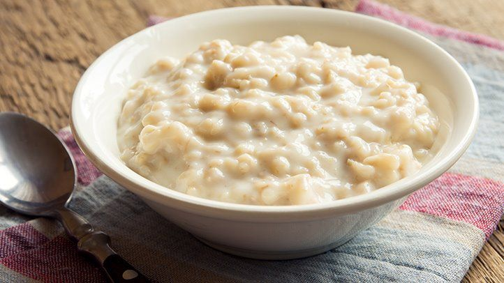

A hot bowl of Oatmeal!
Oatmeal is a quick and easy breakfast when you want something warm but
don't want to slave over a frying pan cooking eggs and bacon.
Ingredients
- Oats (quick oats or regular)
- Water
- (Optional)Toppings
- Fruit such as blueberries or strawberries
- Cinnamon
- Brown Sugar
- Peanut Butter
- Or any other sweet topping!
Steps
- Following directions for purchased oats, add water to pot.
- Add oats and bring to a low boil.
- Reduce heat and cook for time according to directions.
*Note* Quick oats as suggested, will cook faster!
- Check if oatmeal is cooked, additional time might be requierd
- Scoop portion of oatmeal into bowl
- (Optional)Add toppings! Add ontop or stir in!